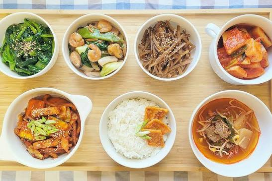
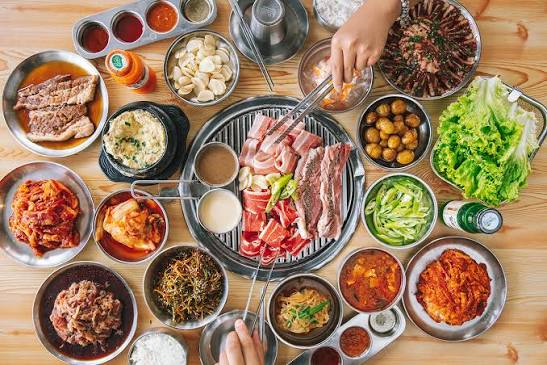

Pull Up a Chair

Last entry ended with "Have you eaten?", so this stop is all about food! Korean food has been part of my life way before this class, from Korean BBQ runs in Koreatown to watching Jin's "Eat Jin" mukbangs and every K-drama scene where someone eats ramyeon straight out of the pot lid. I already touched on dining in Entry 3, but this time I'm going deeper: what's actually on the table, the manners around it, and what all of it says about Korean values.
The Korean Table
A traditional Korean meal is called a 밥상 (bapsang), and it's built around a few basics instead of one main dish.
밥 bap
Steamed rice, the center of the meal. Everyone gets their own bowl.
국 guk / 찌개 jjigae
Soup or stew. Guk is lighter and personal, while jjigae is thicker and often shared from one pot.
반찬 banchan
Small side dishes for everyone to share. At restaurants they're free, and you can ask for refills!
김치 kimchi
Fermented vegetables at basically every meal. Families making kimchi together for winter, called kimjang, is on UNESCO's heritage list.
장 jang
Fermented sauces like soybean paste (doenjang), soy sauce (ganjang), and red chili paste (gochujang). In December 2024, UNESCO added Korean jang-making to its heritage list too.
수저 sujeo
A spoon and chopsticks set, usually metal. The spoon is for rice and soup, and the chopsticks are for banchan.

Must-Eats (and What They Mean)
A lot of Korean dishes come with a story or a time of year attached.
Tteokguk 떡국
Rice cake soup eaten on Lunar New Year. Traditionally, eating it means you've turned a year older, which ties back to the old "Korean age" system from Entry 5.
Miyeokguk 미역국
Seaweed soup that new moms eat to recover after giving birth. That's why Koreans eat it on their birthdays too. (More on this in my health entry!)
Samgyetang 삼계탕
A whole small chicken stuffed with rice and ginseng, eaten on the hottest days of summer. Hot soup in a heat wave sounds wrong, but there's a reason.
Bibimbap 비빔밥
Rice mixed with vegetables, meat, egg, and gochujang. Lots of different things mixed into one bowl, which is a pretty Korean idea of harmony.
Samgyeopsal 삼겹살
Grilled pork belly that you cook yourself at the table and wrap in lettuce. Korean BBQ is basically a group project.
Jajangmyeon 짜장면
Black bean noodles from Korean-Chinese restaurants. It's the go-to for moving day, delivery nights, and Black Day (Entry 3).
Tteokbokki 떡볶이
Spicy rice cakes from street stalls. The after-school snack in pretty much every K-drama.
Chimaek 치맥
Chicken (chikin) + beer (maekju). Korean fried chicken with friends, especially during big sports games.
Table Manners: Do or Don't?
Think you could survive dinner with a Korean family? Guess first, then tap each card to check.
Drinking Etiquette
Every K-drama has that one dinner scene with soju and a lot of very specific rules. Here's what's actually going on:
Two hands
Pour for an elder with two hands, and hold your glass with two hands when they pour for you.
Turn away
When you drink in front of someone older, turn your head to the side instead of drinking face-to-face.
Never pour your own
You fill everyone else's glass, and they fill yours. It's all about looking out for each other.
Not drinking? Fine
You can still join in. Keep your glass a little full so no one refills it, or drink soda. Being there is what counts.
LA vs. Seoul: Everyday Eating
In my K-12 years, lunch was a cafeteria tray or a packed lunch, usually something you could eat fast. In college it's grabbing whatever's closest between classes.
School lunch (급식, geupsik) is a full Korean meal on a metal tray: rice, soup, kimchi, and a few banchan. It looks like a mini bapsang.
Why?
In Korea, a "real" meal means rice plus soup and sides, so even a school lunch follows that structure. American food culture leans toward convenience and individual choice, so lunch is more about being quick and filling.
Everyone orders their own thing, we split the check on Venmo, and we tip.
The table orders together and shares everything. Someone grills, someone pours, someone wraps lettuce for everyone else. And no tipping.
Why?
Sharing food is how Koreans build jeong. When you eat from the same pot and take care of each other's plates, you become part of the same uri (Entry 5). In LA, our food culture is more individual, which matches how much American culture values personal choice.
How Korea Eats Today
Delivery everything
Thanks to ppalli-ppalli culture (Entry 3), you can get food delivered almost anywhere, even to a spot in a park by the Han River.
Mukbang 먹방
From 먹다 (to eat) + 방송 (broadcast). Watching people eat online started in Korea. Jin's "Eat Jin" series is my personal favorite.
Honbap 혼밥
"Eating alone." It used to feel a little lonely or awkward in a culture built on sharing, but now there are restaurants with solo seats just for it.
Convenience stores
Korean convenience stores have instant ramyeon stations, triangle kimbap, and full meals. It's the most K-drama dinner possible.
What Food Teaches About Korean Values
- RespectWho eats first, who pours, and who pays all follow age. The table is a mini version of Korean social hierarchy.
- TogethernessShared stews and banchan turn a meal into a group activity. That's jeong you can eat.
- PatienceKimchi and jang take months or even years to ferment. Families pass down their recipes, so every family's jang tastes a little different.
- Care"Have you eaten?" (Entry 5) shows that feeding someone is one of the main ways Koreans show love.
- HealthA lot of Korean food is eaten for a reason, like soup on hot days or seaweed soup after giving birth. That leads straight into my next entry.
Reflection
I've eaten Korean food for years, but I never really thought about the rules around it. Now I realize that I've probably broken half of them at KBBQ in Koreatown (sorry to every elder I've ever eaten with). Every rule I learned comes back to the same few ideas: respect the people older than you, take care of the people next to you, and don't eat alone if you don't have to.
In Korea, food isn't just about what's on the table. It's about who you're sharing it with.
Next time I'm in Koreatown, I'm waiting for the oldest person to pick up their spoon, pouring for everyone else, and saying 잘 먹겠습니다 before the first bite.
Sources
- UNESCO. "Knowledge, beliefs and practices related to jang making in the Republic of Korea." https://ich.unesco.org/en/RL/knowledge-beliefs-and-practices-related-to-jang-making-in-the-republic-of-korea-01975
- UNESCO. "Kimjang, making and sharing kimchi in the Republic of Korea." https://ich.unesco.org/en/RL/kimjang-making-and-sharing-kimchi-in-the-republic-of-korea-00881
- The Korea Times. "Korean 'jang-making' tradition earns UNESCO heritage status." December 4, 2024. https://www.koreatimes.co.kr/lifestyle/travel-food/20241204/south-korean-jang-making-tradition-earns-unesco-heritage-status
- Korea Tourism Organization. "Visit Korea: Korean Food." https://english.visitkorea.or.kr